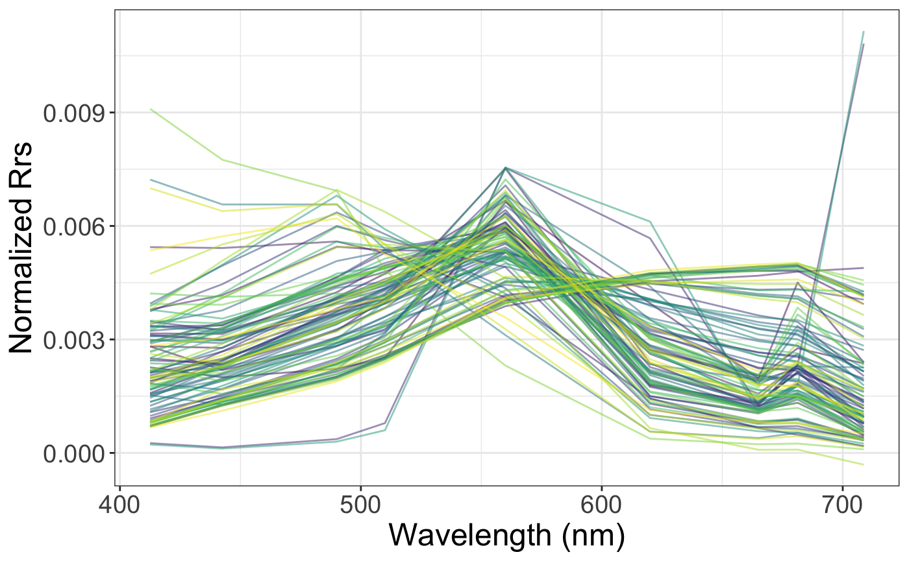
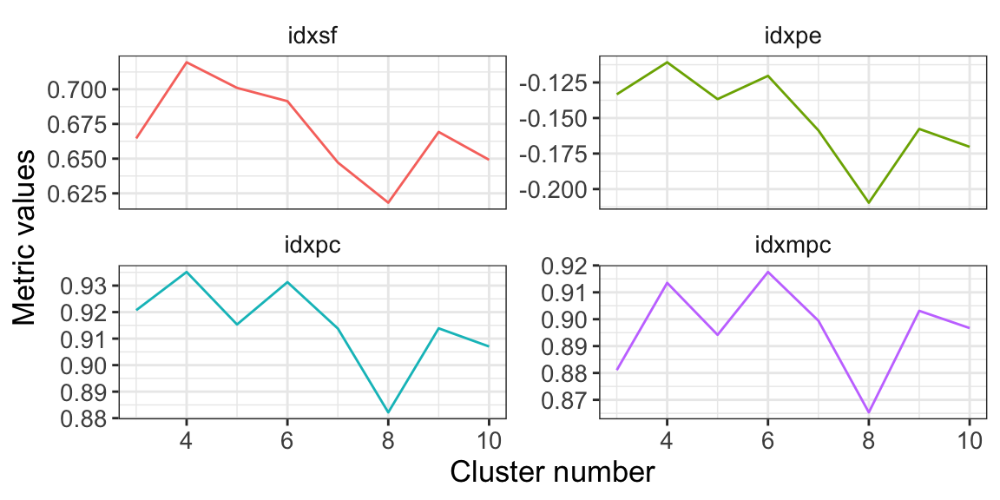
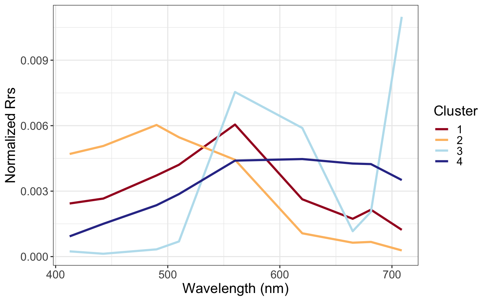
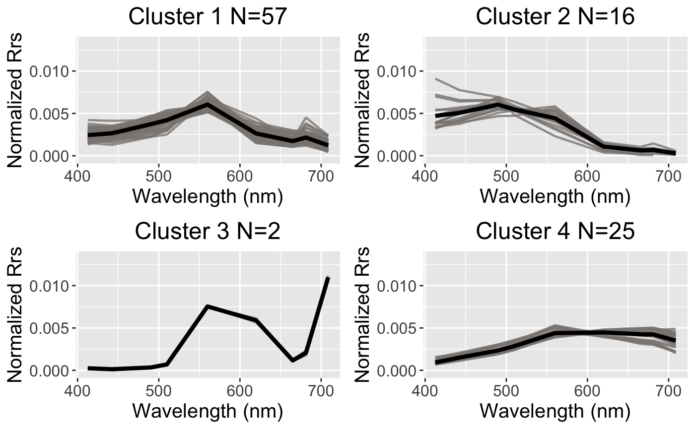

Cluster a new dataset by FCMm
Shun Bi
2020-05-31
Source:vignettes/Cluster_a_new_dataset_by_FCMm.Rmd
Cluster_a_new_dataset_by_FCMm.RmdPreparing the data set
This vignette shows the usage of the package FCMm for determining the cluster number (if FCM selected) and for training the centroids and memberships depending on input data. Here we use our demo data Nechad2015 (resampled to 100 in number for saving vignettes building time).
Note: we also need some other packages to facilitate our process and plot.
Data pre-process
rm(list=ls()) library(FCMm) # this package required for functions of FCMm library(ggplot2) # this package required for producing plots library(magrittr) # this package required for pipe-operator. `vignette("magrittr")` to see more details library(stringr) # this package required for string operations data("Nechad2015") # load the required dataset head(Nechad2015) # to see the structrue of Nechad2015 #> DataProvider SAMPLE.ID X412.5 X442.5 X490 X510 X560 X620 #> 1 CSIR 1 0.00357 0.00413 0.00544 0.00569 0.00673 0.00238 #> 2 CSIR 2 0.00332 0.00357 0.00477 0.00517 0.00689 0.00242 #> 3 CSIR 3 0.00334 0.00388 0.00515 0.00540 0.00631 0.00220 #> 4 CSIR 4 0.00415 0.00413 0.00558 0.00651 0.00770 0.00237 #> 5 CSIR 5 0.00674 0.00674 0.00906 0.00974 0.01030 0.00278 #> 6 CSIR 6 0.00541 0.00509 0.00696 0.00788 0.01200 0.00397 #> X665 X681.25 X708.75 X.Chl_a..ug.L. X.TSM..mg.l. CC_SITE DATE.dd.mm.yyyy. #> 1 0.00161 0.00196 0.000913 5.14 999.99 10 7/10/2002 #> 2 0.00164 0.00235 0.001010 4.98 999.99 10 8/10/2002 #> 3 0.00146 0.00174 0.000778 3.18 999.99 10 8/10/2002 #> 4 0.00174 0.00281 0.000899 4.41 999.99 10 8/10/2002 #> 5 0.00222 0.00360 0.001010 2.91 999.99 10 9/10/2002 #> 6 0.00255 0.00367 0.001550 8.70 999.99 10 10/10/2002 #> time latitude longitude #> 1 08:40 -32.582 18.105 #> 2 07:00 -32.608 18.141 #> 3 09:48 -32.567 18.108 #> 4 12:15 -32.460 17.952 #> 5 11:00 -30.833 17.247 #> 6 08:08 -29.436 16.673 x <- Nechad2015[,3:11] # subset Rrs data wv <- gsub("X","",names(x)) %>% as.numeric # remove the "X" character of x names (to make them numeric) set.seed(1234) # Set this seed so that you can re-produce them w = sample(1:nrow(x), 100) # sample 100 rows of the orignal data, you can test the whole set if you like x <- x[w, ] names(x) <- wv dim(x) #> [1] 100 9
Spectra plot
Now Rrs dataframe (named x) and wavelength vector (named wv) are obtained and could be used for spectra plotting by using function plot_spec_from_df().
Note: The input of plot_spec_from_df() should be a matrix or data.frame with colnames that could be transformed into the numeric as the x-axis of the plot.
Anyway, the return of plot_spec_from_df() is a ggplot list which means you can do anything to it if you are familiar with the package ggplot2.
p.spec <- plot_spec_from_df(x) + labs(x='Wavelength (nm)',y=expression(Rrs~(sr^-1))) + theme_bw() + theme(legend.position='none', text=element_text(size=18)) print(p.spec)

In the raw scale of Rrs, the difference between the spectra is mainly manifested as the magnitude change, especially the reflection at NIR. But it doesn’t seem that clusters could be manually detected from the spectra plot. As we all know, the difference of water color is more caused by the spectral shape rather than the magnitude, which can be seen from the trend difference from the blue region to the red. Therefore, a better way is to normalize the spectrum. Let’s look at the spectra plot of area-normalized spectral. In the following plot, it is obviously found that several clusters sharing the similar spectra shape, which is also the base of FCM running.
# Here used is an interal function `.trapz()` to normalized the raw spectra. However, if you could use the normalize function of which you like. See more details in the package `scales`. x.stand <- x / FCMm:::.trapz(wv, x) p.spec.stand <- plot_spec_from_df(x.stand) + labs(x='Wavelength (nm)',y=expression(Normalized~Rrs)) + theme_bw() + theme(legend.position='none', text=element_text(size=18)) print(p.spec.stand)

Cluster number determination
Before optimizing the best cluster number, we have to obtain an FD list produced by function FuzzifierDetermination() just as follow. This function is used for determining the optimal fuzzifier (or called m value) for following FCM process. The result m.used from the FD list is the desired value of Fuzzifier (m) value.
Generate FD list
set.seed(1234) FD <- FuzzifierDetermination(x, wv, stand=F) # stand = F means the input x has not been normalized yet, telling the function to normalize x at first. # Otherwise, use FuzzifierDetermination(x.stand, wv, stand=T) which means the x.stand has been normalized. summary(FD) #> Length Class Mode #> x 900 -none- numeric #> x.stand 900 -none- numeric #> wv 9 -none- numeric #> max.m 1 -none- numeric #> stand 1 -none- logical #> dmetric 1 -none- character #> Area 100 -none- numeric #> m.ub 1 -none- numeric #> m.used 1 -none- numeric
FD list contains several result by FuzzifierDetermination():
- x: the raw input Rrs dataframe with unit sr^-1
-
x.stand: the standardized Rrs dataframe, if
stand=F - wv: wavelength with unit nm
- max.m: the maximum fuzzifier of FCM as a restriction
- stand: logic value for choosing whether to use standardization
- dmetric: string value for choosing which distance metric to be used
- Area: numeric vector for trapezoidal integral values
- m.ub: the upper boundary of fuzzifier (m) value
- m.used: the desired value of fuzzifier (m) value
Validate functions or metrics
Here introduced are several famous cluster validate metrics such as SIL.F, PE, PC, and MPC. In brief, these metrics mean the goodness of cluster results. Except for PE, the larger of SIL.F, PC, and MPC, the better of the cluster at that time. If you are more interested in that, please see more details in the document of package ppclust by Zeynel Cebeci and fclust by Paolo Giordani. Thanks for their efforts which inspire me a lot to build the FCMm package.
library(ppclust) library(fclust) nb_min <- 3 nb_max <- 10 idxsf <- idxpe <- idxpc <- idxmpc <- seq(nb_min,nb_max,1) i <- 1 for(nb in nb_min:nb_max){ res <- FCM.new(FD, nb, fast.mode=T) # open the fast mode for saving time tmp <- ppclust2(res$res.FCM, otype="fclust") idxsf[i] <- SIL.F(tmp$Xca, tmp$U, alpha=1) # optimal with maximum value idxpe[i] <- -PE(tmp$U) # optimal with minimum value (NOTE I make it negative to follow with other metrics) idxpc[i] <- PC(tmp$U) # optimal with maximum value idxmpc[i] <- MPC(tmp$U) # optimal with maximum value i <- i + 1 } dt <- data.frame(nb=seq(nb_min,nb_max,1),idxsf,idxpe,idxpc,idxmpc) opt.num <- c(apply(dt,2,which.max)[-c(1,3)]+1,apply(dt,2,which.min)[3]+1) dt %>% reshape2::melt(., id='nb') %>% ggplot(data=.,aes(x=nb,y=value,group=variable,color=variable)) + geom_path() + labs(x = "Cluster number", y = 'Metric values') + facet_wrap(~variable, scales='free_y', nrow=2) + theme_bw() + theme(text=element_text(size=13), legend.position='none', strip.background = element_rect(fill="white", color="white"))

nb <- 4
Back to the code, here we assume the best cluster number is ranging from 3 to 10 (maybe out of this range but is unusual to obtain such large number). Then we calculate every validate metrics and record them into their corresponding vectors. Finally, we will obtain the goodness curve of cluster results changing with cluster number.
Note: the better solution to determine a cluster number is to bootstrapply sub-sample the original set, to repeat the process mentioned above for thousands times, and to decide which number is the best one. But it is quite time-consuming. For saving time, we simply selected 4 as the determined cluster number.
FCM running
The input of the function FCM.new() is a FD list which includes the information about the training set (normalized Rrs), the selected fuzzifier value (1.63), and also the cluster number (4).
set.seed(54321) result <- FCM.new(FD, nb, fast.mode = T) summary(result) #> Length Class Mode #> FD 9 -none- list #> res.FCM 17 ppclust list #> p.jitter 9 gg list #> K 1 -none- numeric #> plot.jitter 1 -none- logical #> fast.mode 1 -none- logical result$p.jitter + theme(text = element_text(size=13))

Jitter plots are quite useful to inspect the cluster performance by watching the membership values assigned by each cluster. The result shows good that most of points are at bottom and top (membership equal to zero and one) which means the training set are strictly assigned to one specific cluster, avoiding too soft cluster result when using default m = 2. This is in line with our demand for fuzzy clustering of water spectra which finds a good compromise between the need to assign most spectra to a given cluster, and need to discriminate spectra that classify poorly.
The used m value is 1.63 which is less than the default 2. The reason and its benefits should be a view from the reference of package FCMm, i.e., Bi et al. (2019).
A result list contains several result by FCM.new():
-
FD: the return list by function
FuzzifierDetermination() -
res.FCM: the optimized FCM result generated by functions in package
ppclust - K: cluster number
-
plot.jitter: logic value for the option of doing jitter plot by package
ggplot2 - fast.mode: logic value for choosing whether to use fast mode
FCM plotting
This part shows how to obtain the visualization results in the package FCMm. Function plot_spec() is used for spectral plotting the related FCM-m result. Meanwhile, I recommend the package cowplot to help merging produced plots.
if(library('cowplot', logical.return = T)){ library('cowplot') }else{ install.packages("cowplot") library('cowplot') } p.spec <- plot_spec(result, show.stand=T, HABc=NULL) print(p.spec$p.cluster.spec)

plot_grid(plotlist = p.spec$p.group.spec.2)

Short result analysis
The plot Nechad2015: Normalized cluster result shows great work. The normalized Rrs spectra rather than the raw were presented here since I gonna focus more on the shape of the water spectra which is mainly affected by the phytoplankton (i.e., denoted as Chla concentration). The higher the Chla concentration, the higher reflectance of water near 700 nm and the lower near-visible range (as we know the absorption of pigment will lead to the reduction of light).
Of course, there should be more applications of this cluster in the future, especially the accuracy, rationality, and applicability of the results, especially in the aspect of Chla concentration classification inversion. I will not repeat it here.
If you have any question about FCMm, please contact me without hesitation by email at bishun1994@foxmail.com
Hope you enjoy the journey using FCMm!